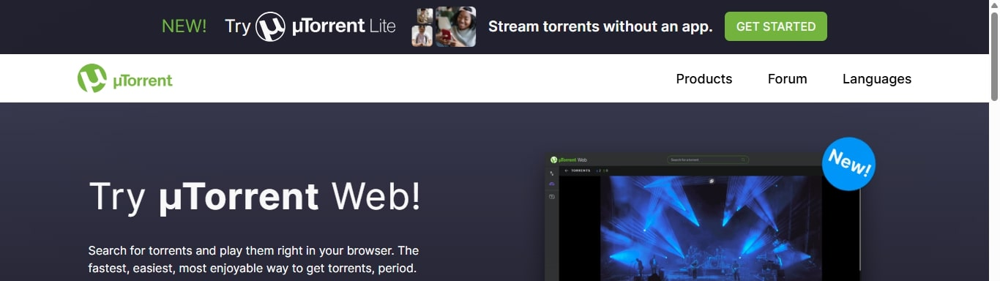
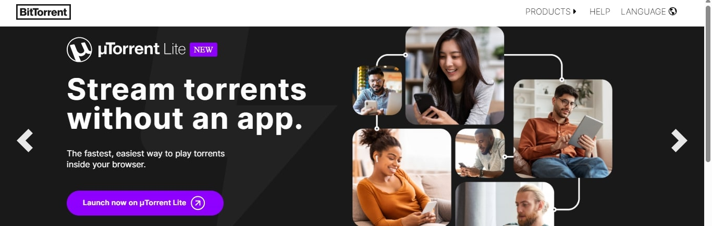
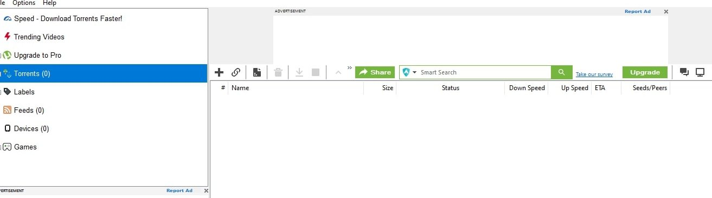
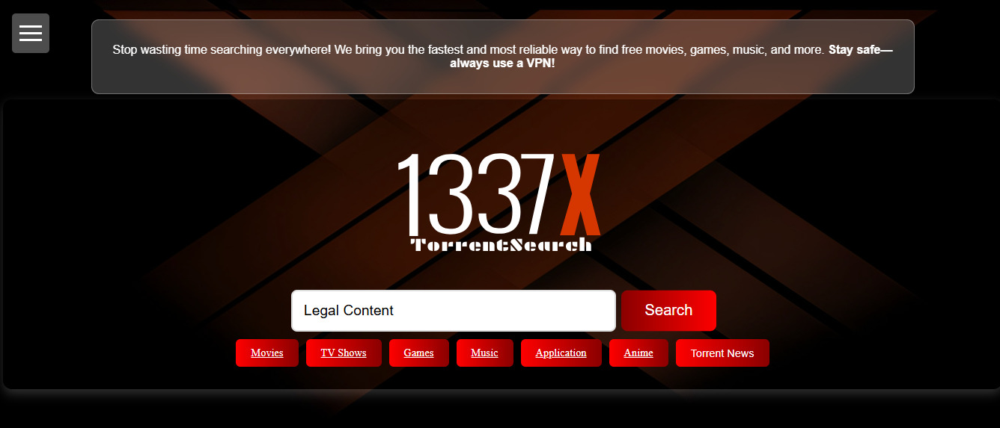
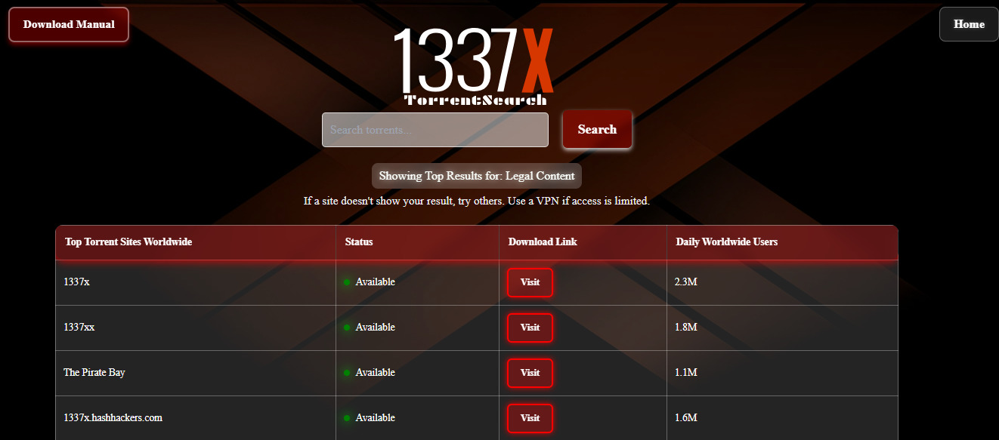
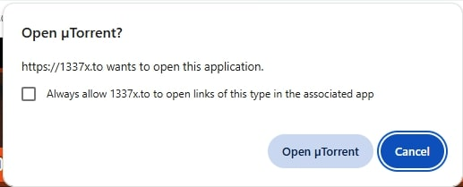
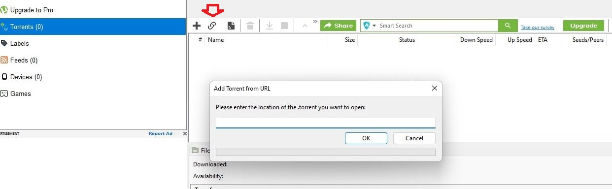
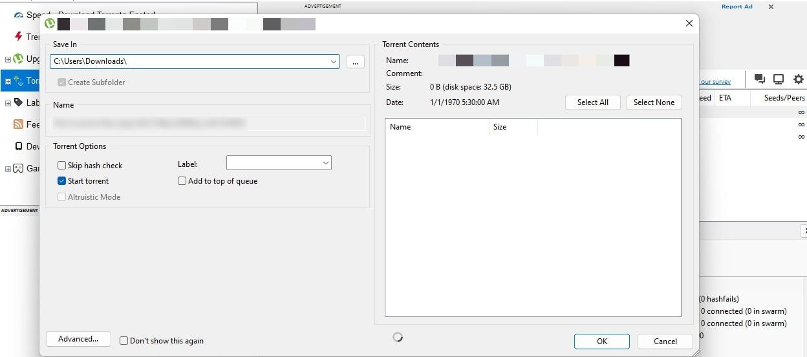
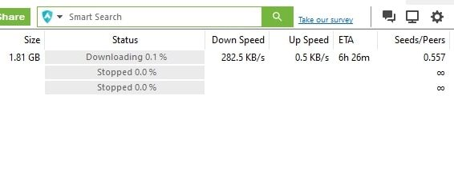

Home

📥 How to Download Files via Torrent
Step 1: Install a Torrent Client for Mobile or Desktop
Download and install a torrent client to get started. Here are some trusted options:


Step 2: Your Torrent Application may looks like this

Step 3: Go to my website and search for copyright free contents
just enter your search term and click search

Step 4: Now this Page opens
this shows top search result and you can visit whatever site you want to visit and click "visit"

Step 5: Go to that site and find your torrent file and copy its Magnet Link or Click on Magnet Download option
It will redirect you to utorrent or bittottent application

If not redirects copy the magnet link and paste it here in your application

Step 6: Select download path and click on download

Now you can check your download status

After download is complete, your client may continue uploading (called "seeding"). This helps others download.